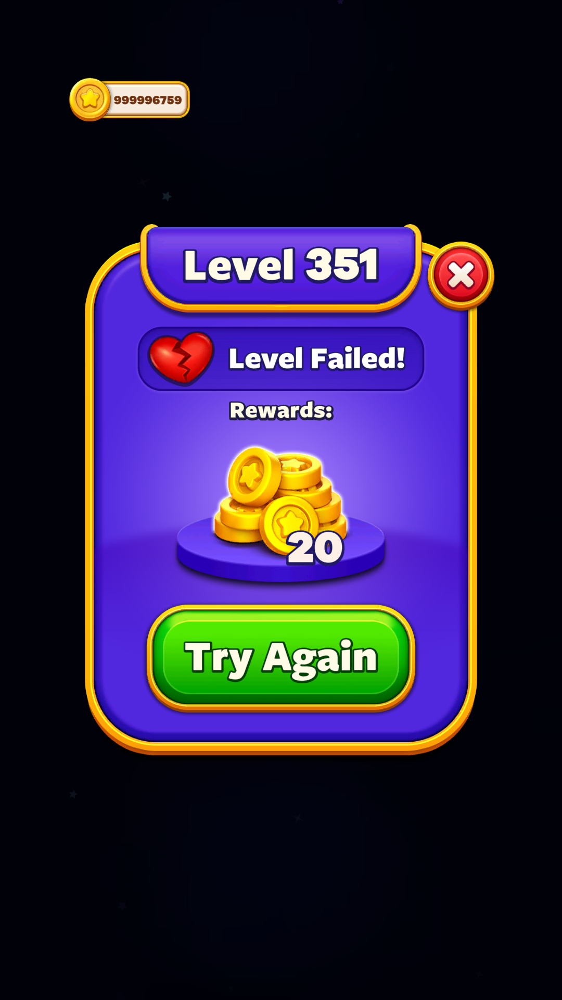
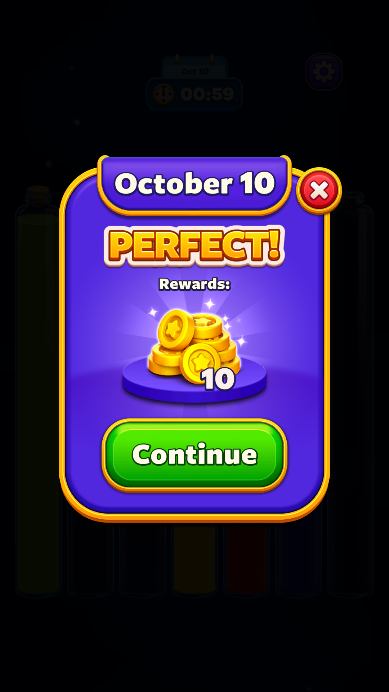

MagicSort — Kinh tế một phiên chơi, chuỗi offer và phần thưởng liên event
Mục lục bài phân tích
- 1. Walkthrough tài nguyên thực đo: vì sao chữ Rewards chưa đủ để kết luận đã cấp?
- 2. Các điểm tiêu coin có tác động thiết kế khác nhau
- 3. Endless Portal: mua quyền mở đoạn quà phía sau
- 4. Broom Streak: một lần fail mất bao nhiêu công sức?
- 5. Một thắng level nuôi nhiều event, nhưng không phải mọi event đều đang mở
- 6. Popup và icon là hai nguồn cạnh tranh khác nhau
- 7. Casebook economy và live-ops
- 8. Các phép đo cần có để đánh giá thiết kế này
- Nguồn đã đối chiếu
Mốc chứng cứ: cache và phiên LDPlayer 10/10/2026, app 0.0.3129; pseudo-C 0.0.3063; một số ảnh minh họa event là phiên lưu 07/10, được ghi riêng. OBSERVED = đo/chụp đã có; STATIC = config hoặc code; PROPOSED = tình huống tính toán hay test chưa chạy. Không có giao dịch IAP thật trong phiên 10/10.
Kết luận: một lần Daily Play On giá 900 trong khi một Daily thắng trả 10 coin. Sự chênh lệch đó buộc người chơi cân nhắc cả phần thưởng tháng, thời gian đã bỏ ra và các nguồn coin ngoài Daily. Sale Endless Portal gắn nhiều quà miễn phí phía sau một bước trả tiền; giá trị để cân đối phải là cả đoạn được mở khóa, không chỉ ô coin ở cửa mua. Event chuỗi thắng lại tạo “tài sản đang có nguy cơ mất”, khiến quyết định cứu ván khác nhau tùy trạng thái event.
1. Walkthrough tài nguyên thực đo: vì sao chữ Rewards chưa đủ để kết luận đã cấp?
| Mốc | Coin | Undo | Shuffle | Extra Bottle | Life / tiến độ | Diễn giải |
|---|---|---|---|---|---|---|
| Before | 999.996.759 | 9.999 | 9.999 | 9.991 | 5 life, Regular 351 | Tài nguyên đã được chỉnh từ trước; không dùng làm số dư người mới |
| Sau Undo và Extra Bottle | Không phát sinh chi coin | 9.998 | 9.999 | 9.990 | Bàn 351 | Dùng kho vật phẩm có sẵn |
| Quit Regular → Failed → Home | 999.996.759 | 9.998 | 9.999 | 9.990 | 4 life, vẫn 351 | Popup Failed in “Rewards:20”, nhưng coin không tăng |
| Sau Daily Play On | 999.995.859 | 9.998 | 9.999 | 9.990 | +60 giây ở Daily | Debit đúng 900 |
| Sau lượt Daily thắng và Continue | 999.995.869 | 9.998 | 9.999 | 9.990 | Lịch 0→1; Regular 351 | Credit đúng 10 |
Đối soát toàn phiên: Δcoin = −900 + 10 = −890; ΔUndo = −1; ΔExtraBottle = −1; ΔShuffle = 0. Không cộng 20 từ popup Failed. Các thời hạn limitless/timed currency được lưu bằng timestamp riêng; không thể coi icon tim vô hạn là một lượng mạng số nguyên trong dictionary.




Chi tiết đọc sâu đã giải thích được: trường InventoryModel.spendCoin trong cả ba snapshot before / after_playon / after đều là 2.700 dù coin thực giảm 900. Trong pseudo-C InventoryService.CheckCanSendEventForSpendCoin (RVA 0x3CED9DC), chỉ khi SpendEventSent=false mới cộng amount; vượt 1.899 thì đặt true và gửi attribution, các lần sau trả về không cộng. Snapshot đã có spendEventSent=true, nên việc counter đứng yên phù hợp gate của bản 0.0.3063. Đây không phải tổng chi lifetime và không phải bằng chứng mất debit Daily. Thân pseudo-C có cảnh báo decompiler ở nhánh lỗi null, nhưng gate SpendEventSent và nhánh cộng bình thường đọc được rõ.
2. Các điểm tiêu coin có tác động thiết kế khác nhau
Giá dưới đây từ before/CachedRemoteConfigs.gameEconomyModel. Đây là cấu hình tài khoản tại thời điểm chụp; chỉ Daily Play On lần đầu đã được chạy xác nhận trong phiên mới.
| Điểm tiêu | Giá coin | Người chơi mua điều gì? | So với 20 coin thắng Regular | So với 10 coin thắng Daily |
|---|---|---|---|---|
| Undo | 300 | Đảo một bước; có thể giữ thông tin màu đã khám phá | 15 trận | 30 trận |
| Shuffle | 300 | Thay trật tự màu trong chai được chọn | 15 trận | 30 trận |
| Extra Bottle | 900 | Thêm vùng đệm trên bàn | 45 trận | 90 trận |
| Mega Shuffle / Reveal | 900 mỗi loại | Biến đổi bàn / gỡ lớp che theo biến thể | 45 trận | 90 trận |
| Play On lần 1 | 900 | Cứu attempt hiện tại; Daily đã thấy +60s | 45 trận | 90 trận |
| Play On lần 2 | 1.900 | Cứu tiếp cùng attempt | 95 trận | 190 trận |
| Play On lần 3 trở đi | 2.300 | Bậc cuối bảng cấu hình hiện có | 115 trận | 230 trận |
| Refill | 900 | Nạp mạng theo cấu hình, trần thường 5 | 45 trận | 90 trận |
Các cột “số trận” là phép chia chỉ dùng thưởng nền, không phải số trận thực tế cần chơi: chưa cộng event, daily reward, quảng cáo, cauldron, IAP. Các booster Mega Shuffle/Reveal có giá trong config không có nghĩa đang hiện trên thanh booster: inGameBoosterVariant=0, isRevealBoosterEnabled=false ở snapshot này.
2.1. Ví dụ số dư nhỏ: nơi giá lũy tiến tạo điểm thiếu tiền
PROPOSED, cùng bảng giá: người chơi có 3.000 coin, không nhận thêm quà giữa attempt. Mua Play On lần 1 còn 2.100; lần 2 còn 200; lần 3 cần 2.300 nên thiếu 2.100. Tổng hai lần cứu là 2.800, tương đương 140 thắng Regular nếu chỉ tính 20 coin nền. Một lời mời “thêm 900” ở lần đầu không mô tả chi phí cả chuỗi nếu người chơi tiếp tục kẹt.
Thân pseudo-C PlayOnManager.GetCurrentPlayOnPrice (RVA 0xD45074) chọn PlayOnConfigModels[clamp(playOnUsage,0,Count−1)]. Vì thế ví dụ lần 4 vẫn 2.300 là hệ quả của ba bậc config + code 3063, không phải ảnh đã mua bốn lần ở 3129. Trường thirdSecondPlayOnPrice không nên được ưu tiên hơn bảng playOnConfigModels khi đường code đang đọc bảng.
2.2. Nguồn coin tháng của Daily
Ảnh lịch xác nhận các mốc 3 / 7 / 14 / 25 ngày, lần lượt 100 coin / 30 phút limitless life / 500 coin / 2.500 coin. Nếu hoàn thành đúng 25 ngày, mỗi ngày 10 coin và nhận đủ ba mốc coin, tổng là 25×10+100+500+2.500 = 3.350 coin, cộng 30 phút mạng vô hạn. Đây là kịch bản từ cấu hình, chưa chạy hết tháng.
Nếu cùng người chơi cần mua một lần 900 coin cho mỗi ngày, chi 22.500 coin, net riêng Daily = −19.150 coin. Nếu chỉ cần 3 lần mua trong 25 ngày, net = +650 coin. Cách tính này giúp đặt câu hỏi đúng: Daily là hoạt động luyện kỹ năng và quay lại theo ngày; lợi nhuận coin phụ thuộc nhu cầu cứu ván. Không đánh giá event chỉ bằng 10 coin ở popup từng ngày hoặc chỉ bằng 2.500 coin grand prize.

3. Endless Portal: mua quyền mở đoạn quà phía sau
Ảnh 10/10 cho thấy cửa hiện tại 1.300 coin / 81.000 VND; ô Extra Bottle kế tiếp ghi FREE nhưng có khóa. Tap ô đó hiện “Accept previous offer to open”; không nhận quà. Như vậy FREE ở đây mô tả giá riêng của bước đó, còn quyền tiếp cận phụ thuộc bước trước.

3.1. Phân rã một đoạn thật từ fallbackSteps
| Bước 1-based trong config | Nội dung | Cổng | Vai trò |
|---|---|---|---|
| 1 | 1 Undo | Không IAP trong entry | Cho người chơi trải nghiệm claim |
| 2 | 1 giờ limitless life | Không IAP trong entry | Tăng giá trị ở lại chơi |
| 3 | 1.300 coin; sort.endlessnv3, dollarEquivalent 2,99 | Trả tiền | Chặn toàn bộ chuỗi sau nếu chưa mua |
| 4 | 1 Extra Bottle | Sau bước 3 | Quà đã xem trước trên ảnh |
| 5 | Rương: 1 Undo + 1 Shuffle | Sau bước 4 | Tạo thêm một hành động claim |
| 6 | 1 giờ limitless life | Sau bước 5 | Dẫn vào một phiên chơi dài hơn |
| 7 | 200 coin | Sau bước 6 | Hoàn lại một phần coin visible |
| 8 | 2 Shuffle | Sau bước 7 | Quà cuối trước cổng kế |
| 9 | 2.000 coin; sort.endlessnv6, dollarEquivalent 5,99 | Trả tiền tiếp | Bắt đầu đoạn tiếp theo |
Nếu bước 3 và 4–8 thực sự được claim trong cùng cấu hình, một lần vượt cổng mở tổng 1.500 coin + 1 Undo + 3 Shuffle + 1 Extra Bottle + 1 giờ limitless life. Quy đổi riêng booster theo giá mua coin hiện tại cho mục đích so sánh nội bộ: 1.500 + 300 + 3×300 + 900 = 3.600 coin cộng thời gian mạng. Đây không phải giá trị tiền mặt, không phải tiết kiệm chắc chắn, và không cộng lại rương cha lẫn các phần tử con như hai phần thưởng riêng.
3.2. Toàn bộ các cổng và chi phí tích lũy tham chiếu
| Bước | Coin tại cửa | Product | dollarEquivalent | Cộng dồn từ cửa đầu |
|---|---|---|---|---|
| 3 | 1.300 | sort.endlessnv3 | 2,99 | 2,99 |
| 9 | 2.000 | sort.endlessnv6 | 5,99 | 8,98 |
| 15 | 3.000 | sort.endlessnv8 | 7,99 | 16,97 |
| 21 | 4.500 | sort.endlessnv12 | 11,99 | 28,96 |
| 27 | 10.000 | sort.endlessnv25 | 24,99 | 53,95 |
| 33 | 15.000 | sort.endlessnv45 | 44,99 | 98,94 |
| 39 | 50.000 | sort.endlessnv90 | 89,99 | 188,93 |
Snapshot có 44 bước và 7 cổng. dollarEquivalent là số tham chiếu trong config, không thay thế giá storefront. Giá 81.000 VND ở ảnh chỉ xác nhận cửa đang nhìn thấy, không được dùng suy toàn bộ giá VND của bảy cửa. Ngoài fallbackSteps còn có fallbackStepsForUniqueInApps; do đó cần biết event đang dùng bảng nào trước khi nói mọi tài khoản đi chính xác cùng chuỗi.
Ý nghĩa thiết kế: gói này có ba bộ đếm khác nhau: bước hiện tại; tổng đã chi; giá trị quà có thể claim sau mỗi cửa. UI chỉ đặt giá vào cửa, còn giá trị trải dài theo đường đi. Báo cáo conversion nên đo cả người xem cửa, người tap FREE bị khóa, người mua thành công, người claim hết đoạn và người dừng ở cửa tiếp theo.
4. Broom Streak: một lần fail mất bao nhiêu công sức?
Runtime có mốc 0, 2, 5, 8, 11, 17, 22, 28, 33, 42, 60. Checkpoint là 0, 5, 11, 22, 33, 60. TryResetWinStreak / GetCheckPointWinCount / FallDownTo là các điểm định vị cho hành vi reset. Ảnh hướng dẫn phiên 07/10 nói fail đưa tiến độ về checkpoint.


| Tiến độ giả định trước fail | Checkpoint đã vượt | Tiến độ bị mất theo mô hình | Điều người chơi cân nhắc |
|---|---|---|---|
| 4 | 0 | 4 thắng | Sắp chạm checkpoint đầu, cứu ván có sức nặng |
| 5 | 5 | 0 thắng vượt checkpoint | Vừa được bảo vệ; chi cứu vì Broom riêng lẻ ít cấp bách hơn |
| 10 | 5 | 5 thắng | Chỉ một thắng nữa tới 11 nhưng có 5 thắng có thể mất |
| 21 | 11 | 10 thắng | Đoạn giữa checkpoint dài hơn |
| 59 | 33 | 26 thắng | Cận grand prize, mức mất tiềm năng lớn nhất trong ví dụ |
Các dòng là STATIC + PROPOSED, không phải đã thử fail ở cả năm mốc. Không lấy số mốc bị mất nhân với coin nền rồi gọi đó là tiền người chơi “mất”: thưởng đã nhận và quyền nhận lại có ledger riêng. Thứ bị mất trước hết là vị trí tiến độ chưa được bảo vệ; grant lại rương hay không phải kiểm bằng MaxWinCount / MaxClaimedCheckPointWinCount và state claim.
Cũng cần sửa cách đọc thưởng mốc 2: cache 10/10 cho 15 phút limitless life, có biến thể kèm CollectionPack. Mô tả cũ “50 coin tại mốc 2” không phù hợp snapshot này; 50 coin nằm ở mốc 5. Ảnh có biểu tượng gói thẻ mang số 2 không đủ để kết luận “2 gói”: phải phân biệt loại pack / số thẻ trên icon với amount của reward.
5. Một thắng level nuôi nhiều event, nhưng không phải mọi event đều đang mở
Các gate trong cùng snapshot: Broom Streak=true ở level 50; Magic Streak=true ở 25; Magic Lab=true ở 100; MiniGame=true ở 140; Team Quest=true ở 45; Boat Rush=true ở 90. Magic Pass=false, Magic Bottle=false, Super Charger=false. Jetpack Race classic=false nhưng JetpackRaceWithStage=true. Một popup Jetpack xuất hiện sau fail không bác bỏ cờ classic=false; phải ánh xạ đúng biến thể.
Ví dụ PROPOSED: một người chơi đang tham gia các event phù hợp, thắng first-try một SuperHard. MiniGame có normal/hard/superHard=1/2/3 và firstTryMultiplier=2, nên nhánh công thức cho 3×2=6 trident; TeamQuest config cho SuperHardScore=5 nếu đủ điều kiện đóng góp. MagicLab có task FirstTryWin và SuperHardLevel để cùng được xử lý nếu stage hiện tại có những nhiệm vụ đó. Broom tăng một thắng, còn MagicStreak xử lý điểm theo hệ số riêng. Không cộng thêm MagicPass chỉ vì bảng key 1/3/5 tồn tại: cờ pass hiện tắt.
Vì sao phải tách grant và progress? Một lần thắng có thể cộng trident vào kho, tăng task, tăng streak và chỉ tạo quyền nhận rương chưa claim. Cộng tất cả vào một cột “reward earned” sẽ phóng đại coin thực nhận. Nên có bốn cột: tiến độ thay đổi; claimable mới; vật phẩm đã cấp; quyền lợi theo thời gian đã bắt đầu.
Magic Lab minh họa dependency: nhiệm vụ “Reach Broom step X” cần đồng bộ giá trị đã đạt khi event mở; nhiệm vụ “Earn Y coin” cần cộng delta từ các grant phù hợp. Dùng cùng một cách “+1 khi callback” cho hai nhóm sẽ làm sai dữ liệu người chơi mở event khi đã tiến xa. Task enum hỗ trợ 11 giá trị từ None tới FirstTryWin; stage live do server cấp, nên cache flag=true không chứng minh đang có stage cụ thể.
6. Popup và icon là hai nguồn cạnh tranh khác nhau
ReturnToHomeSequenceService.Initialize của bản decompile chứa thứ tự lệnh cố định; config hiện tại giới hạn 2 popup có thể bỏ qua mỗi lần về Home, sessionStart limit=0, cả hai gate bật. Các lệnh tự có IsSkippable, ShouldShowForce, ShouldTerminateTheFlow. Vì vậy “limit=2” không phải giới hạn tuyệt đối hai màn chắn.
Ví dụ PROPOSED: có hai popup event skippable đã hiện, rồi Endless Portal đủ điều kiện phía sau. Với cùng chính sách giới hạn, Portal có thể không tự bật; nếu một lệnh nhận thưởng bắt buộc được xử lý, nó có thể không tiêu cùng quota. Để kiểm thử phải ghi loại lệnh và lý do skip, không chỉ đếm mọi ảnh popup. LobbyEventsService lại kiểm chỗ icon cột trái/phải; một event hoạt động nhưng mất vị trí icon không đồng nghĩa bị tắt hoặc mất tiến độ.
Đánh giá UX: quota hạn chế quảng bá nhưng vẫn giữ các giao dịch/quyền lợi bắt buộc. Rủi ro là người chơi khó phân biệt “đang nhận quà” với “bị mời vào event”. Một đo lường phù hợp là thời gian từ nhấn Continue sau thắng đến lúc nút Play lại có thể bấm, phân theo số popup bắt buộc, popup skippable và thao tác dismiss.
7. Casebook economy và live-ops
MS-E01 — Không coi Failed:20 là một grant · OBSERVED
Tiền điều kiện: Regular 351, coin=999.996.759. Bước: Quit qua hai cảnh báo, xem Failed, về Home, đọc số dư. Kết quả: 20 xuất hiện trên popup nhưng coin không tăng; life 5→4. Bất biến: ledger chỉ ghi reward khi số dư/transaction xác nhận, không scrape chữ “Rewards” rồi cộng. Bằng chứng: MS-T08, MS-11-failed.png, cache và ảnh Home sau quit. Chưa chạy: mọi nhánh fail khác; không khẳng định toàn bộ game không bao giờ cấp compensation sau fail.
MS-E02 — Đối soát debit và credit Daily · OBSERVED
Tiền điều kiện: số dư trước đã lưu. Bước: mua Play On 900, đọc snapshot after_playon; hoàn thành lượt Daily thành công, Continue, đọc after. Kết quả: −900 rồi +10, net −890. Bất biến: các booster không đổi do hai thao tác này; Regular không tăng. Bằng chứng: ba summary.json; MS-T15/17/18. Điểm phân tích: spendCoin không đổi nên không dùng nó thay số dư để xác nhận debit.
MS-E03 — Coin bằng giá và thiếu một coin · STATIC / PROPOSED
Fixture: hai account test sạch ở coin 900 và 899, đã mở cùng popup Play On đầu. Bước: bấm một lần và ghi kết quả. Kỳ vọng từ đường TryUse: 900 được debit về 0 và áp hiệu ứng; 899 không được thành số âm, đi nhánh thiếu tiền/mở Store đúng source PlayOn. Bất biến: không cấp cứu ván trước khi giao dịch tài nguyên được chấp nhận. Bằng chứng định vị: PlayOnManager.TryUse, InventoryService, StorePopUpSource.PlayOn. Chưa thực thi trên tài khoản hiện tại vì tài nguyên dư cao.
MS-E04 — Giá tăng trong cùng attempt và kẹp bậc cuối · STATIC / PROPOSED
Fixture: đủ 10.000 coin, bảng [900,1900,2300], cùng attempt. Bước: gọi cứu bốn lần qua điều kiện stuck thích hợp. Kỳ vọng: chi 900+1900+2300+2300=7.400; còn 2.600. Bất biến: lần mở lại popup mà chưa mua không được tăng usage; bắt đầu attempt mới phải kiểm lại reset usage. Bằng chứng: GetCurrentPlayOnPrice, LevelStats._playOnUsage. Giới hạn: hiệu ứng từng bậc Daily/Regular cần test riêng; bảng giá không đủ chứng minh effect.
MS-E05 — FREE bị khóa không cấp thưởng · OBSERVED
Tiền điều kiện: Endless Portal dừng ở cửa 1.300 coin/81.000 VND. Bước: bấm ô Extra Bottle FREE phía sau. Kết quả: thông báo phải accept offer trước; không cấp Extra Bottle. Bất biến: tap một ô khóa không được làm bước hiện tại tăng. Bằng chứng: MS-T10/11; MS-15-locked-free.png. Chưa chạy: thanh toán thật, purchase cancellation, restore, refund; không dùng ảnh storefront để ghi purchase success.
MS-E06 — Tính cả đoạn Portal, không đếm trùng rương · STATIC / PROPOSED
Fixture: fallbackSteps hiện tại, bắt đầu ở bước 3, event chưa hết. Bước mô phỏng: purchase được xác nhận một lần; claim lần lượt 4–8. Kỳ vọng ledger: 1.500 coin, Undo1, Shuffle3, ExtraBottle1, limitless1h. Bất biến: rương là container; các reward con được cấp một lần, không cộng thêm một gói booster vì có cả chestType và rewards. Bằng chứng: endlessPortalV2ConfigModel.fallbackSteps[2..7]. Status: tính cấu hình, chưa thực hiện IAP.
MS-E07 — Rơi từ 10 về checkpoint 5 · STATIC / PROPOSED
Fixture: Broom active, winCount=10, checkpoint5 đã đạt, mốc đã claim lưu rõ. Bước: fail một Regular. Kỳ vọng: về checkpoint5 theo luật; chặng đến11 còn6 thắng. Bất biến: không reset event id; không xóa reward đã nhận; khi leo lại qua8 không nhân đôi rương trái với ledger. Bằng chứng: BroomStreakService.TryResetWinStreak/GetCheckPointWinCount, DataService.FallDownTo, configsteps. Chưa chạy: test lại grant ở mốc8 là trọng tâm cần thực thi, không mặc định đã chống trùng hoàn hảo.
MS-E08 — Một win có nhiều tác động nhưng một ledger rõ · STATIC / PROPOSED
Fixture: SuperHard first-try, MiniGame active, TeamQuest tham gia, MagicLab stage có hai task liên quan; pass tắt. Bước: hoàn thành level, chờ các callback và claim popup. Kỳ vọng tính config: 6 trident; TeamQuest+5 nếu đủ điều kiện; hai task tiến bộ; pass không cộng key. Bất biến: progress chưa claim không được ghi như coin đã cấp. Bằng chứng: MiniGame config1/2/3×2, TeamQuest1/3/5, MagicLabTaskType. Cần đo: thứ tự callback/reward thật và phạm vi của first-try trên bản cài.
MS-E09 — Reach task khác delta task · STATIC / PROPOSED
Fixture: MagicLab vừa bắt đầu; Broom đang step11; stage có task reach8 và earn100coin. Bước: đồng bộ event; sau đó nhận grant20coin. Kỳ vọng theo mô hình task: task reach không bắt người chơi làm lại step8; task earn chỉ cộng grant phù hợp20, không lấy toàn bộ số dư làm progress. Bất biến: mở lại popup không tăng task. Bằng chứng: MagicLabService đường nhiệm vụ reach/increase, enum EarnCoin. Giới hạn: ngưỡng và filter earn reason của stage đang chạy phải lấy server response; ví dụ100 là giả định.
MS-E10 — Popup quota không bằng số popup tổng · STATIC / PROPOSED
Fixture: HomeReturn limit=2; hai event skippable và một reward bắt buộc đủ điều kiện trước offer. Bước: win→Home; ghi ordered commands, reason show/skip, số popup. Kỳ vọng: đánh quota đúng loại; offer cuối có thể bị hoãn; reward bắt buộc không mất vì quota. Bất biến: “chưa hiện” khác “không tồn tại”. Bằng chứng: ReturnToHomeSequenceService, IReturnToHomeSequenceCommand, runtime root config. Không claim: số popup chính xác trong fixture chưa chạy.
MS-E11 — Daily mốc tháng chỉ cấp một lần · PROPOSED
Fixture: đã hoàn thành 2 ngày, reward mốc3 chưa nhận. Bước: thắng ngày thứ3; claim100coin; mở lại lịch, relaunch và đồng bộ. Kỳ vọng: count=3, 100coin chỉ một lần ngoài10coin thưởng ngày. Bất biến: claim bit/counter giữ qua restart; không cộng lại khi animation phát lại. Bằng chứng định vị: DailyMonthModel.ClaimedDays, Daily progress claim methods; cacheDaily rewards. Chưa chạy: tháng ngắn, đổi tháng, chơi bù, múi giờ; không suy từ một ngày đã thắng.
MS-E12 — Cổng active không thay thế điều kiện participation · STATIC / PROPOSED
Fixture: BoatRush enabled, người chơi đủ level90 nhưng chưa Join; một event đã hết giờ; một event đang mở. Bước: so nút Home, popup Join và lời mời thưởng; không mua gì. Kỳ vọng: active event/eligibility/join là ba trạng thái khác nhau; expired không được cấp quà tham gia như event còn hiệu lực. Bất biến: cùng config flag không bảo đảm có race live. Bằng chứng: BoatRushStateService, ShouldShowJoinPopUp, thời gian event. Ảnh BoatRush 07/10 chỉ minh họa Join và 30 phút life, không phải run mới của fixture.
8. Các phép đo cần có để đánh giá thiết kế này
| Câu hỏi sản phẩm | Đơn vị đo phù hợp | Tránh kết luận sai |
|---|---|---|
| Play On có cứu được người chơi? | Win sau purchase cùng attempt, số giây/nước bổ sung thực dùng | Không dùng doanh thu tăng làm bằng chứng trải nghiệm tốt hơn |
| Portal hấp dẫn ở quà nào? | Tap locked FREE, purchase at gate, claim completion từng đoạn | Không chỉ đếm impression popup |
| Checkpoint có giảm mất mát? | Retry sau fail theo khoảng cách tới checkpoint, rage quit, coin spend | Không gộp progress5 và progress59 |
| Quota Home có giảm ma sát? | Time-to-next-play, dismiss count, command show/skip reason | Không đếm chung popup bắt buộc với offer |
| Daily có duy trì lịch chơi? | Số ngày hoàn thành, tỷ lệ nhận mốc, chi cứu theo tháng | Không chỉ báo số người vào calendar |
| Event chéo có lạm phát? | Ledger earn reason, reward variant, pending/claimed state | Không flatten mọi nhánh reward thay thế rồi cộng hết |
Nguồn đã đối chiếu
facts/runtime/test_20261010/{before,after_playon,after}/summary.json;before/CachedRemoteConfigs;before/GrandCachedAdConfig; MS-T08–18.RecoveredNative/PseudoC/Assembly-CSharp/Modules/Contexts/GamePlay/PlayOn/Scripts/PlayOnManager.c:GetCurrentPlayOnPrice,TryUse;GamePlay/Loop/Scripts/ReturnToHomeSequenceService.c.gdd/EndlessPortal.json,BroomStreak.json,MagicLab.json,MagicPass.json,MiniGame.json,TeamQuest.json;screens/web/screens.jsondùng phân loại ảnh asset/ảnh game/ảnh thử can thiệp từ trước.- Economy tổng quát, IAP từng họ, luồng sự kiện, case gameplay. Các phân tích số mới dùng snapshot10/10 khi khác hồ sơ lịch sử.